Bu belgede, saha cihazlarına veya çeşitli idarelerin talep ettiği formata benzer bir formatta dışa aktarım için tasarlanmış tüm raporlar toplanmıştır:
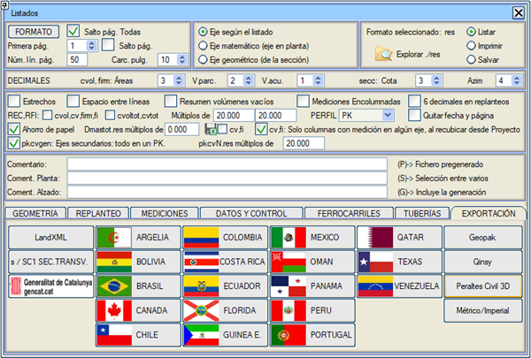
Enkesit
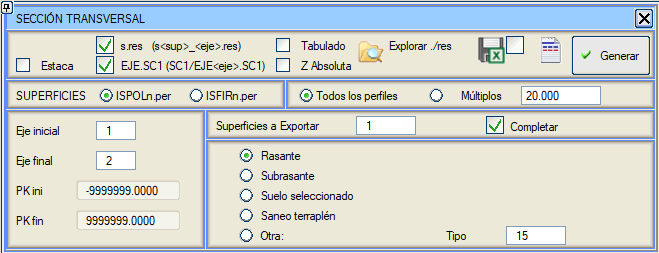ENKESİT SC1 raporu, belirtilen güzergah aralığı için, güzergah boyunca enkesiti tanımlayan .sc1 uzantılı bir değişim dosyası oluşturur. Dosyalar, kullanıcının çalışma klasörü içinde SC1 adlı yeni bir alt klasöre kaydedilir.
YÜZEYLER'de kullanıcı elde etmek istediği verileri belirtir: toprak işleri verileri için ISPOLn.per ve üstyapı verileri için ISFIRn.per (n güzergah numarasıdır).
Eğer ISPOLn.per seçilirse, dışa aktarılacak yüzeylerin sayısı seçilir ve bu durumda iki olasılık vardır:
- Dışa aktarılacak yüzey sayısı 1'e eşit. Bu durumda program beş olasılık sunar:
- Kırmızı Kot
- Subrasante
- Seçilmiş Malzeme
- Dolgu Altı İyileştirme
- Diğer (bu durumda kullanıcı yüzey tipini belirtir)
Tüm durumlarda, ve eğer Tamamla seçeneği etkin bırakılırsa, seçilen yüzey L68 yüzeyi ile tamamlanır.
- Dışa aktarılacak yüzey sayısı 1'den büyük. Bu durumda yüzey sayısını ve ardından her bir yüzeyle ilişkili çizgi tipini sorar. Tüm yüzeyler, YÜZEYxx gibi bir başlıkla ayrılarak birbiri ardına yazdırılır, burada xx yüzeyin tipidir. Bu çoklu yüzey durumunda, yüzeyler tek bir yüzey durumunda olduğu gibi tamamlanmadan veya yeniden kodlanmadan orijinal noktalar ve kodlarla dışa aktarılır.
Eğer ISFIRn.per seçilirse, bu durumda dışa aktarılacak üstyapı katmanının numarası sorulur; 0 değeri subrasante ve 1'den 30'a kadar olan değerler her bir üstyapı katmanının ilgili numarasıdır. Bir katman seçildikten sonra, kullanıcı sonucun elde edilmek istendiği derinliği girmelidir.
Bu rapor aşağıdaki hususları dikkate alır:
-
Herhangi bir yüzeyin geometrik eksen noktası -1000 koduyla kodlanır.
- Tüm seçilmiş malzeme katmanları (15, 16, 17, 18, 182,...) 107 ile aynı şekilde kodlanır.
- Seçilmiş malzeme çizgisiyle oluşturulduğunda 101 kodu korunur.
- Güzergahın herhangi bir tarafından kırpıldığında, başlangıca veya sona bir milimetre uzaklıkta ve araziyle kesişime karşılık gelen kotta yarı-dikey bir nokta eklenir.
-
Yarma şevi, uygun olmayan arazideki yarma çizgisiyle (L69) bittiğinde, eğer bu nokta şevin sondan bir önceki noktasıysa ve bu noktada şev değişikliği yoksa, L68 çizgisiyle olan değişim noktası atlanır.
.sc1 dosyalarının kotları, Mutlak Z kutucuğu işaretlenerek mutlak değerde yazdırılabilir (varsayılan olarak kırmızı kota görelidir).
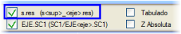Bu diyalog kutusundan, seçilen yüzeylerin farklı some noktalarının verilerini içeren bir dizi geleneksel rapor da elde etmek mümkündür. Bu raporların her birinin adı s<yüzey>_<güzergah>.res şeklindedir; burada <yüzey> listelenen yüzey (çizgi tipi) ve <güzergah> güzergah numarasıdır:
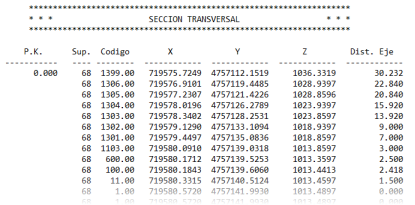
Sekmeli seçeneği etkinleştirildiğinde, aynı rapor ancak sütunlar sekme ile ayrılarak elde edilir.
Kazık No kutucuğu etkinleştirildiğinde, elde edilen rapor KM yerine kazık no değerini gösterecektir.
Bu raporu hesap tabloları için .xlsx formatında oluşturabilirsiniz.
butonundan erişerek başlıkları düzenleyebilirsiniz.
LandXML
LANDXML formatındaki rapor (.xml), seçilen aralıktaki her bir güzergah için güzergahxxx.xml adında (xxx güzergah numarasıdır), LandXML standardına göre, LEICA, TRIMBLE, TOPCON ve diğer ekipmanlar veya programlar tarafından kullanılmaya hazır bir dosya oluşturur. LandXML sürümünü şunlar arasından seçmeye izin verir: 1.0, 1.1, 1.2 ve 2.0.
Varsayılan olarak seçilen dışa aktarım, LandXML 1.2 formatıdır.
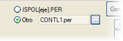LandXML raporunu elde ettiğimiz varsayılan dosya ISPOLn.per'dir (n güzergah numarasıdır), ancak bu menü bize raporumuzu oluşturmak için ISPOLn.per'den farklı bir enkesit dosyası seçme imkanı sunar.

|
Bu markaların anılması, onlarla herhangi bir taahhüt veya münhasırlık anlamına gelmez, sadece distribütörlerinin teknisyenleriyle, kullanıcılarımızın ilgisi doğrultusunda veri ithalat ve ihracatlarının tasarımında çalışılmıştır. ISTRAM®/ISPOL® ekibi, bu konularla ilgilenen herhangi bir başka şirketle benzer işbirliklerine açıktır. |
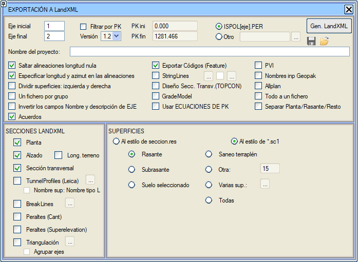
Seçilen güzergahlar için, belirtilen KM'ler arasındaki plan, boykesit ve enkesitler dışa aktarılır.
.xml dosyası için iki farklı olası stil vardır:
 seccion.res tarzında: Bu eski stildir ve artık kullanılmamaktadır. Stilin adı, elde edilen dosyaların bir yandan kırmızı kot (L67) ile toprak işleri hattı (L68) arasında ayrım yaptığı ve ikincisinin de subrasante, hendek ve şev bölgesi olarak ayrıldığı tam enkesit geometrisi raporuna (seccion.res) atıfta bulunur. seccion.res tarzında: Bu eski stildir ve artık kullanılmamaktadır. Stilin adı, elde edilen dosyaların bir yandan kırmızı kot (L67) ile toprak işleri hattı (L68) arasında ayrım yaptığı ve ikincisinin de subrasante, hendek ve şev bölgesi olarak ayrıldığı tam enkesit geometrisi raporuna (seccion.res) atıfta bulunur.
Dolayısıyla, LandXML dosyalarındaki enkesit yüzeyleri kırmızı kot, subrasante, hendek ve şevdir ve bunlar arasından seçim yapılabilir veya kırmızı kot hariç hepsi (yani 68 yüzeyi) seçilebilir.
- 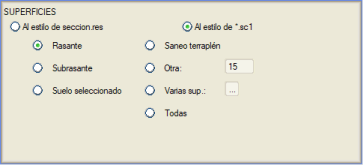*.sc1 tarzında: Bu, şu anda en çok kullanılan stildir ve tam yüzeylerin .xml dosyasına parçalara ayrılmadan döküldüğü enkesit (.sc1) dışa aktarım raporuna atıfta bulunur. Bu durumda, hangi yüzeyin dışa aktarılmak istendiği (kırmızı kot, subrasante, seçilmiş malzeme,...) veya birkaç yüzeyin dışa aktarılmak istenip istenmediği belirtilir. İkinci durumda, [...] butonu, kullanıcının hangilerinin olduğunu belirtebileceği bir tabloya erişim sağlar.
Enkesitler için yüzeyler bölümünde Tümü seçeneğimiz bulunmaktadır. Bu seçenek seçildiğinde, .per dosyalarının tüm yüzeyleri LandXML dosyasına yazılır.
Dikkate alınması gereken diğer seçenekler ve hususlar şunlardır:
- TRIMBLE marka ekipmanlar için, Sıfır uzunluklu güzergah elemanlarını atla ve ayrıca Güzergah elemanlarında uzunluk ve azimut belirt seçenekleri etkin tutulmalıdır.
- Kodları Dışa Aktar (Feature): Bu seçenek, ISTRAM®/ISPOL® kodlarını .xml dosyasına FEATURE bölümü içinde dışa aktarmayı sağlar. FEATURE bölümü LEICA'ya özgüdür ve doğru yorumlayamadıkları için TRIMBLE ekipmanlarında devre dışı bırakılması gerekebilir. Mevcut TRIMBLE ekipmanları FEATURE kodlarını yorumlamaktadır.
- StringLines: Bu seçenek, bir karayolunu Stringline formatında dışa aktarır. Bu seçenek işaretlendiğinde, dışa aktarılacak yüzeylerin numarasını ve tipini seçmek mümkündür (varsayılan olarak 67 ve 68).
StringLines seçeneğinin sağında bir onay kutusu ve bir "..." butonumuz var. Bu seçeneklerle, StringLines'ların oluşturulduğu kodlar filtrelenebilir.
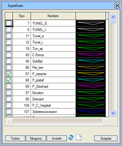
-
LEICA ekipmanları için, Kodları Dışa Aktar (Feature) ve Stringlines etkinleştirilmelidir.
- Kavşak Kolları: kesişimleri ve/veya dönel kavşakları tanımlanmış bir güzergah dışa aktarılırken, bu kutucuk etkinleştirilmişse, kavşak kolları ana güzergahla aynı bilgilere sahip güzergahlar olarak dahil edilir.
- PVI: Bu seçenek, boykesit bölümünde, <ProfAlign> etiketi içinde <PVI> etiketlerini dışa aktarmayı sağlar.
- Tümünü tek bir dosyaya: Bu seçenek etkinleştirildiğinde, tüm bilgiler tek bir dosyaya yazılabilir.
- Enkesit Tasarımı (TOPCON): Enkesit, standardın <DesignCrossSectSurf> elemanı olarak dışa aktarılır, yani tasarımı şablon olarak dışa aktarır. Bu seçenek, TOPCON ekipmanlarına dışa aktarım için kullanışlıdır.
- GradeModel: Bu fonksiyon, sadece TOPCON ekipmanlarına özgüdür ve genişlik ile dever verilerini dışa aktarır.
- TunnelProfiles (LEICA): Bu seçenek, tünel kesitini TunnelProfiles olarak dışa aktarmayı sağlar (sadece LEICA'ya özgü). Bu seçeneğin yanındaki buton, dışa aktarılmak istenen tünel yüzeylerini seçmeyi sağlar, varsayılan olarak: teorik kazı (9), destek (7), birincil destek (19), ikincil destek (192) ve kaplama (8). Eğer Yüzey adı: L tipi Adı seçeneği etkinleştirilirse, yüzeylerin adları çizgi tipinde tanımlanan adlar olur.
- Arazi boyu: Eğer bu seçenek etkinse, "Profile" bölümüne arazi boykesitini içeren bir yüzey eklenir.
- Kırık Çizgiler: LandXML'e, [...] butonuna basıldığında görünen kutuda belirtilen yüzeylerin boyuna çizgilerini (kırık çizgilerini) dışa aktarmayı sağlar. Bu çizgiler, <BreakLine> elemanları olarak oluşturulur.
- Deverler (Cant): LandXML dosyalarında deverleri dışa aktarmayı sağlar. LandXML dosyasındaki tanımlayıcı ad Cant'tır.
- Üçgenleme: LandXML'de bir üçgenlemeye çıkarılmak istenen yüzeyleri seçmeyi sağlar. [...] butonuna basıldıktan sonra, üçgenlemeyi oluşturmasını istediğiniz yüzeyleri seçebileceğiniz bir diyalog kutusu gösterilir.
- Güzergahları grupla: Bu seçenek etkin olduğunda, yüzey ve güzergah başına bir üçgenleme oluşturmak yerine, sadece yüzey başına bir üçgenleme oluşturulur. Bu seçenek sadece "Üçgenleme" ve "Tümünü tek bir dosyaya" seçenekleri etkin olduğunda uygulanır.
"Üçgenleme"de "Güzergahları grupla" seçeneği seçildiğinde, her bir güzergahın sınırları yazılır. - Allplan: Oluşturulan LandXML dosyasının Allplan ile uyumlu olması için bu kutucuğun etkin olması gerekir.
- GÜZERGAH Adı ve açıklama alanlarını ters çevir: Bu şekilde LandXML'deki güzergah adları Güzergah[GüzergahNo] şeklinde veya doğrudan güzergahın kendi adı olabilir.
- KM EŞİTLİKLERİNİ kullan: Eğer seçenek etkinse, "Plan" ve "Enkesit" bölümlerinde "KM EŞİTLİKLERİ" tablosu dikkate alınır.
- Plan/Kırmızı Kot/Diğerlerini Ayır: Eğer bu seçenek etkinse, bilgiler üç farklı XML dosyasına aktarılacaktır: biri planı, diğeri kırmızı kotu ve boykesiti ve bir diğeri de geri kalan kesitleri içerecektir.
Ayrıca, LandXml'e dışa aktarımda, CRS verilerinin gittiği "CoordinateSystem" bölümünün yazıldığı da belirtilmelidir.
GISA
Bu diyalog kutusu, Katalonya'daki GISA'nın projelerin nihai teslimi için talep ettiği ASCII değişim dosyalarını oluşturmayı sağlar.
Raporlar \GISA alt klasöründe oluşturulur.
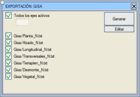
Diğer Ülkeler İçin Formatlar
Burada, farklı ülkelerin idareleri tarafından talep edilen formatlara uymak üzere tasarlanmış bir dizi rapor gruplandırılmıştır.
Bu raporların her biri, ilgili ülke veya eyaletin adını taşıyan bir alt klasöre kaydedilir.
Cezayir
Plan ve boykesit güzergahlarını içeren 5 adet .txt formatında rapor bulunmaktadır. Başlıklar Fransızcadır.
Hor_vert_N.txt: Dairesel güzergah elemanlarının some noktalarının koordinatları
Bolivya
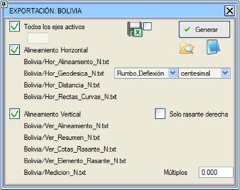
Bu rapor için açılar için iki kriter seçilebilir: Rulman, Sapma veya Azimut, Some Açısı (ve her iki durumda da açı grad cinsinden dereceye değiştirilebilir).
- Azimut her zaman Kuzey'den ve Doğu'ya doğru pozitiftir.
- Rulman en yakın noktadan (K,G,KD,KB,GD,GB) ölçülür. Örn. Rulman=30GD -> Azimut=170;
- Sapma, Azimut'un her zaman pozitif değerdeki sapmasıdır.
- Some açısı, önceki doğrudan bir sonraki doğruya saat yönünde ölçülür, böylece sağa kurplarda: Örn. Sapma=30 -> Açı=230. Sola kurplarda: Örn. Sapma=30 -> Açı=170.
Brezilya
Brezilya için raporlar, hem plan hem de boykesit için, KM (kilometraj) ve KAZIK NO arasında seçim yapmayı sağlayan bir seçici içerir.
Palyeleri Dahil Et bayrağını etkinleştirerek kesit raporuna palyeleri dahil edebiliriz.
Kanada
Şili
Bu Ülkeye özel, aşağıdaki özelliklere sahip rapor:
Tüm aktif güzergahlar işaretlendiğinde, hem .txt hem de .xlsx olmak üzere tüm güzergahları içeren her türden tek bir rapor oluşturulur: Hor_Geodesica_0.txt, Hor_Geodesica_0.xlsx, Hor_Distancia_0.txt,....
Tüm aktif güzergahlar seçildiğinde, tek raporlar veya güzergahlara göre bağımsız raporlar arasında da seçim yapılabilir.
Hor_Rectas_Curvas raporunda: KM Eşitliklerinden türetilen kullanıcı KM'lerine göre birikimli mesafeleri yazdırma seçeneğimiz bulunmaktadır.
Plan ve Boykesit raporları, plan raporlarından bağımsız olarak etkinleştirilebilir.
Şili/Üstyapı_N.txt (Üstyapı_N.xlsx) raporunu alabiliriz.
Kullanıcı KM'leri seçeneği, Hor_Alineamiento raporunu da etkiler.
Kullanıcı KM'si etkinleştirildiğinde:
DİKKAT: Bu raporda KM eşitliklerinden türetilen değerlerin katlarının yazdırılmasını istiyorsak, arazi enkesitlerini o noktalarda çıkarmalıyız: Enkesitler->Eşit Aralıklar->KM Eşitliklerine göre Eşit Aralık.
 Sadece sağ kırmızı kot: Boykesit raporları için, sağ ve sol taşıt yolu için kırmızı kotlar varken, sadece sağ taşıt yolunun kırmızı kotunu listelemek mümkündür. Sadece sağ kırmızı kot: Boykesit raporları için, sağ ve sol taşıt yolu için kırmızı kotlar varken, sadece sağ taşıt yolunun kırmızı kotunu listelemek mümkündür.
Bu rapor için açılar için iki kriter seçilebilir: Rulman, Sapma veya Azimut, Some Açısı (ve her iki durumda da açı grad cinsinden dereceye değiştirilebilir).
Kolombiya
Kolombiya yönetmelik tablosu kullanıldığında, aliyman raporunda proje hızı yerine Veth ve dairesel kurp raporunda kurbun özgül hızı yerine Vch yazdırılır.
Kosta Rika
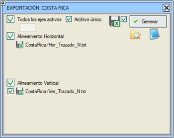
Yatay ve düşey güzergah verilerinin iki raporu mevcuttur.
Ekvador
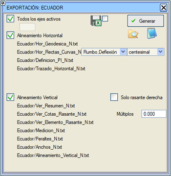
Bu rapor için açılar için iki kriter seçilebilir: Rulman, Sapma veya Azimut, Some Açısı (ve her iki durumda da açı grad cinsinden dereceye değiştirilebilir).
- Azimut her zaman Kuzey'den ve Doğu'ya doğru pozitiftir.
- Rulman en yakın noktadan (K,G,KD,KB,GD,GB) ölçülür. Örn. Rulman=30GD -> Azimut=170;
- Sapma, Azimut'un her zaman pozitif değerdeki sapmasıdır.
- Some açısı, önceki doğrudan bir sonraki doğruya saat yönünde ölçülür, böylece sağa kurplarda: Örn. Sapma=30 -> Açı=230. Sola kurplarda: Örn. Sapma=30 -> Açı=170.
Florida
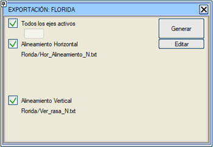
Ekvator Ginesi
Meksika
Güzergah raporunun Yatay Güzergahı için raporumuz mevcuttur.
Arazi enkesit noktalarının eksene olan mesafeleri ve göreli kotlarının Seccionamiento_N.xlsx raporu.
Havaalanları: Bir güzergah için rapor oluşturulmak istendiğinde (Tüm aktif güzergahları devre dışı bırak), bilgilerin çıkarılmak istendiği .per dosyası seçilebilir. Bu, kullanıcı tarafından eklenmiş, rötuşlanmış ve yeniden metrajlandırılmış bir branş dosyası olabilir. Referans yüzeyi veya kırmızı kot, L67 ile L68'in (Görünen Yüzey) birleşimidir.
Umman
Panama
Biri plan, diğeri boykesit olmak üzere iki rapor.
Peru
Peru'daki projeler için klasik bilgiler içeren raporlar.
Bu rapor için açılar için iki kriter seçilebilir: Rulman, Sapma veya Azimut, Some Açısı (ve her iki durumda da açı grad cinsinden dereceye değiştirilebilir).
Portekiz
Katar
Her bir güzergahı planda gösteren bir rapor içerir. Başlıklar İngilizcedir.
Teksas
Venezuela
Metrik / İmperyal
Metrik ve emperyal sistemlere dışa aktarım yaparak raporlar elde etmeyi sağlar. Çalışılan birim sisteminden bağımsız olarak ceje_SM ve ceje_SI raporları oluşturulur.
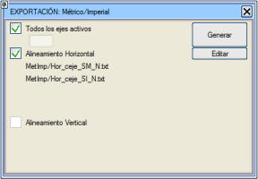
|